2024 Higher Mathematics - Paper 2 marking instructions
Source: Scottish Qualifications Authority (SQA) / Qualifications Scotland. This is a StemInteract HTML companion, not an official HTML edition. Selectable text is supplied alongside original page images. Use the images or original PDF for equations, powers, fractions, vector notation, tables and diagrams; text extraction cannot fully preserve mathematical layout.
Jump to a question
PDF page 1
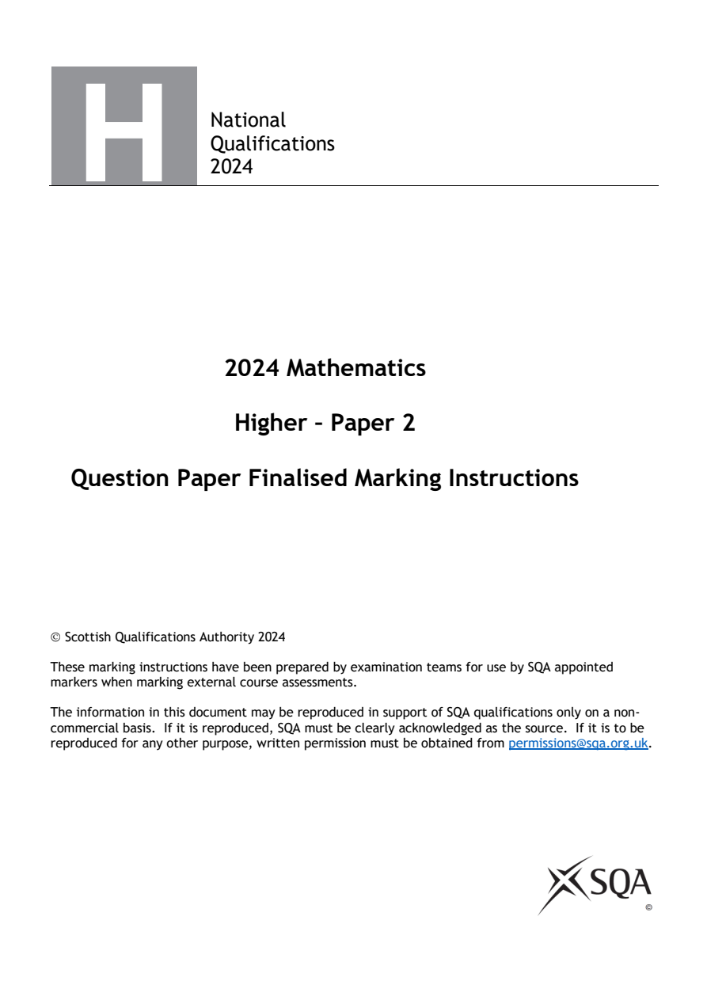
Selectable page text
National
Qualifications
2024
2024 Mathematics
Higher – Paper 2
Question Paper Finalised Marking Instructions
© Scottish Qualifications Authority 2024
These marking instructions have been prepared by examination teams for use by SQA appointed
markers when marking external course assessments.
The information in this document may be reproduced in support of SQA qualifications only on a non-
commercial basis. If it is reproduced, SQA must be clearly acknowledged as the source. If it is to be
reproduced for any other purpose, written permission must be obtained from permissions@sqa.org.uk.PDF page 2
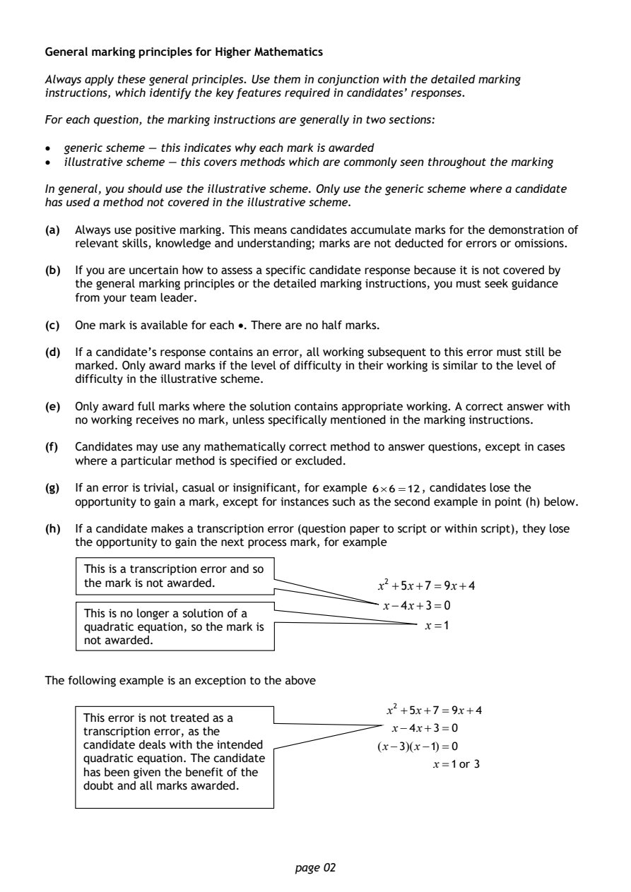
Selectable page text
General marking principles for Higher Mathematics
Always apply these general principles. Use them in conjunction with the detailed marking
instructions, which identify the key features required in candidates’ responses.
For each question, the marking instructions are generally in two sections:
• generic scheme — this indicates why each mark is awarded
• illustrative scheme — this covers methods which are commonly seen throughout the marking
In general, you should use the illustrative scheme. Only use the generic scheme where a candidate
has used a method not covered in the illustrative scheme.
(a) Always use positive marking. This means candidates accumulate marks for the demonstration of
relevant skills, knowledge and understanding; marks are not deducted for errors or omissions.
(b) If you are uncertain how to assess a specific candidate response because it is not covered by
the general marking principles or the detailed marking instructions, you must seek guidance
from your team leader.
(c) One mark is available for each •. There are no half marks.
(d) If a candidate’s response contains an error, all working subsequent to this error must still be
marked. Only award marks if the level of difficulty in their working is similar to the level of
difficulty in the illustrative scheme.
(e) Only award full marks where the solution contains appropriate working. A correct answer with
no working receives no mark, unless specifically mentioned in the marking instructions.
(f) Candidates may use any mathematically correct method to answer questions, except in cases
where a particular method is specified or excluded.
(g) If an error is trivial, casual or insignificant, for example 6×6=12, candidates lose the
opportunity to gain a mark, except for instances such as the second example in point (h) below.
(h) If a candidate makes a transcription error (question paper to script or within script), they lose
the opportunity to gain the next process mark, for example
This is a transcription error and so
the mark is not awarded. x² +5x+7 =9x+4
x−4x+3=0
This is no longer a solution of a
quadratic equation, so the mark is x=1
not awarded.
The following example is an exception to the above
x² +5x+7 =9x+4
This error is not treated as a
transcript ion err or, as the
x−4x+3=0
candidate deals with the intended (x−3)(x−1)=0
quadratic equation. The candidate
x=1 or 3
has been given the benefit of the
doubt and all marks awarded.
page 02PDF page 3
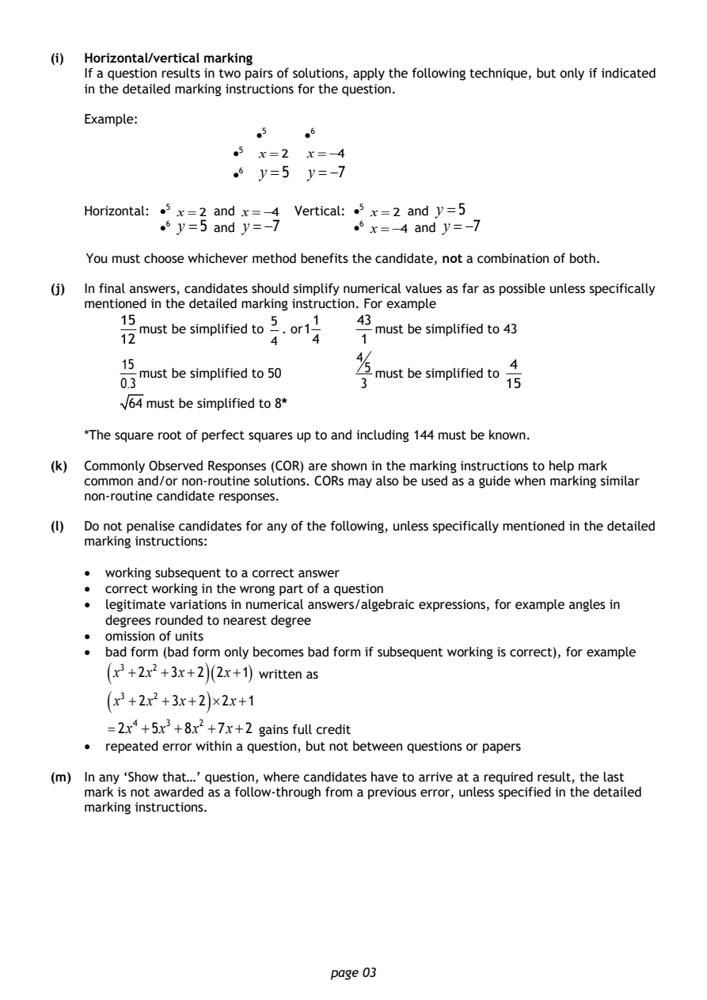
Selectable page text
(i) Horizontal/vertical marking
If a question results in two pairs of solutions, apply the following technique, but only if indicated
in the detailed marking instructions for the question.
Example:
•5 •6
•5 x=2 x=−4
•6 y =5 y =−7
Horizontal: •5 x and x Vertical: •⁵ x=2 and y =5
•6 y⁼=²5 and y⁼=⁻−⁴7 •6 x=−4 and y =−7
You must choose whichever method benefits the candidate, not a combination of both.
(j) In final answers, candidates should simplify numerical values as far as possible unless specifically
mentioned in the detailed marking instruction. For example
15 5 1 43
must be simplified to . or1 must be simplified to 43
12 4 4 1
4
15 5 4
must be simplified to 50 must be simplified to
0.3 3 15
64 must be simplified to 8*
*The square root of perfect squares up to and including 144 must be known.
(k) Commonly Observed Responses (COR) are shown in the marking instructions to help mark
common and/or non-routine solutions. CORs may also be used as a guide when marking similar
non-routine candidate responses.
(l) Do not penalise candidates for any of the following, unless specifically mentioned in the detailed
marking instructions:
• working subsequent to a correct answer
• correct working in the wrong part of a question
• legitimate variations in numerical answers/algebraic expressions, for example angles in
degrees rounded to nearest degree
• omission of units
• bad form (bad form only becomes bad form if subsequent working is correct), for example
(
x³ +2x² +3x+2
)(2x+1)
written as
( )
x³ +2x² +3x+2 ×2x+1
=2x⁴ +5x³ +8x² +7x+2 gains full credit
• repeated error within a question, but not between questions or papers
(m) In any ‘Show that…’ question, where candidates have to arrive at a required result, the last
mark is not awarded as a follow-through from a previous error, unless specified in the detailed
marking instructions.
page 03PDF page 4
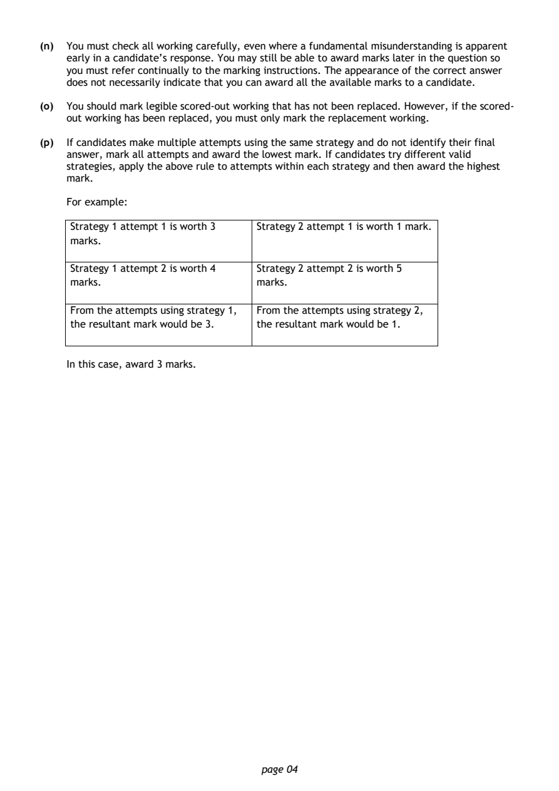
Selectable page text
(n) You must check all working carefully, even where a fundamental misunderstanding is apparent
early in a candidate’s response. You may still be able to award marks later in the question so
you must refer continually to the marking instructions. The appearance of the correct answer
does not necessarily indicate that you can award all the available marks to a candidate.
(o) You should mark legible scored-out working that has not been replaced. However, if the scored-
out working has been replaced, you must only mark the replacement working.
(p) If candidates make multiple attempts using the same strategy and do not identify their final
answer, mark all attempts and award the lowest mark. If candidates try different valid
strategies, apply the above rule to attempts within each strategy and then award the highest
mark.
For example:
Strategy 1 attempt 1 is worth 3 Strategy 2 attempt 1 is worth 1 mark.
marks.
Strategy 1 attempt 2 is worth 4 Strategy 2 attempt 2 is worth 5
marks. marks.
From the attempts using strategy 1, From the attempts using strategy 2,
the resultant mark would be 3. the resultant mark would be 1.
In this case, award 3 marks.
page 04PDF page 5
Paper 2, Question 1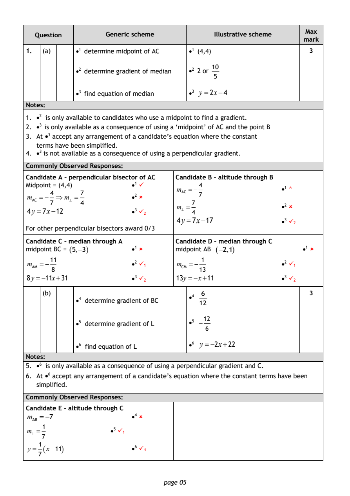
Selectable page text
Max
Question Generic scheme Illustrative scheme
mark
1. (a) •1 determine midpoint of AC •1 (4,4) 3
10
•2 determine gradient of median •2 2 or
5
•3 find equation of median •3 y =2x−4
Notes:
1. •² is only available to candidates who use a midpoint to find a gradient.
2. •³ is only available as a consequence of using a ‘midpoint’ of AC and the point B
3. At •³ accept any arrangement of a candidate’s equation where the constant
terms have been simplified.
4. •³ is not available as a consequence of using a perpendicular gradient.
Commonly Observed Responses:
Candidate A – perpendicular bisector of AC Candidate B – altitude through B
Midpoint = (4,4) •1 ✓ 4
m_{A}_{C} =− •1 ^
m_{A}_{C} =− 4 ⇒m_{⊥} = 7 •2 7
7 4 7
m_{⊥} = •2
4y =7x−12 •3 ✓
2
4y =⁴7x−17 •3 ✓
2
For other perpendicular bisectors award 0/3
Candidate C – median through A Candidate D – median through C
midpoint BC = (5,−3) •1 midpoint AB (−2,1) •1
11 1
m_{A}_{M} =− •2 ✓ m_{C}_{M} =− •2 ✓
1 1
8 13
8y =−11x+31 •3 ✓
2
13y =−x+11 •3 ✓
2
(b) 6 3
•4
•4 determine gradient of BC
12
12
•5 determine gradient of L •5 −
6
•6 find equation of L •6 y =−2x+22
Notes:
5. •⁶ is only available as a consequence of using a perpendicular gradient and C.
6. At •⁶ accept any arrangement of a candidate’s equation where the constant terms have been
simplified.
Commonly Observed Responses:
Candidate E - altitude through C
m_{A}_{B} =−7 •4
1
m_{⊥} = •5 ✓
1
7
1
y = (x−11) •6 ✓
1
7
page 05PDF page 6
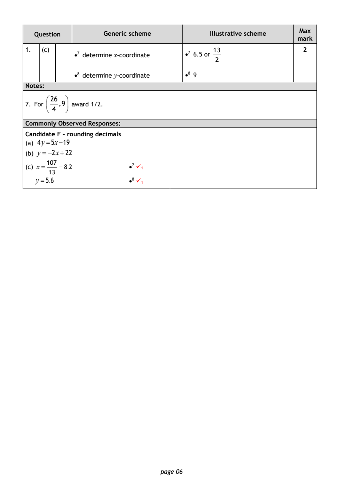
Selectable page text
Max
Question Generic scheme Illustrative scheme
mark
1. (c) 13 2
•7 determine x-coordinate •7 6.5 or
2
•8 determine y-coordinate •8 9
Notes:
26
7. For ,9 award 1/2.
4
Commonly Observed Responses:
Candidate F – rounding decimals
(a) 4y=5x−19
(b) y =−2x+22
107
(c) x= =8.2 •7 ✓
1
13
y=5.6 •8 ✓
1
page 06PDF page 7
Paper 2, Question 2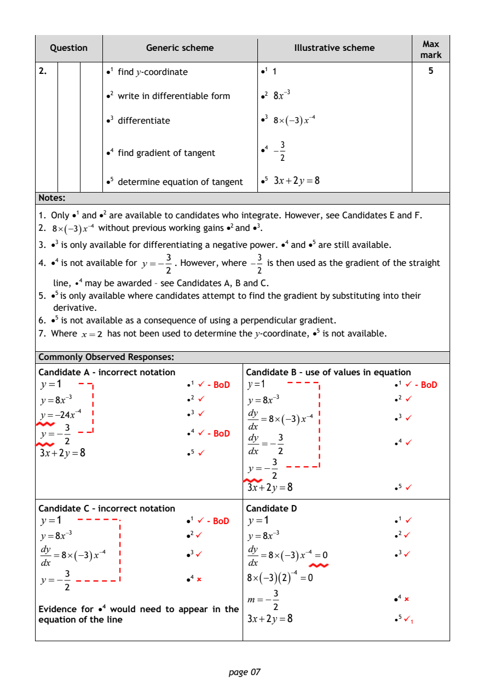
Selectable page text
Max
Question Generic scheme Illustrative scheme
mark
2. •1 find y-coordinate •1 1 5
•2 write in differentiable form •2 8x⁻³
•3 differentiate •3 8×(−3)x⁻⁴
3
•4 find gradient of tangent •4 −
2
•5 determine equation of tangent •5 3x+2y =8
Notes:
1. Only •¹ and •² are available to candidates who integrate. However, see Candidates E and F.
2. 8×(−3)x⁻⁴ without previous working gains •² and •³.
3. •³ is only available for differentiating a negative power. •⁴ and •⁵ are still available.
3 3
4. •⁴ is not available for y =− . However, where − is then used as the gradient of the straight
2 2
line, •⁴ may be awarded – see Candidates A, B and C.
5. •⁵ is only available where candidates attempt to find the gradient by substituting into their
derivative.
6. •⁵ is not available as a consequence of using a perpendicular gradient.
7. Where x=2 has not been used to determine the y-coordinate, •⁵ is not available.
Commonly Observed Responses:
Candidate A - incorrect notation C ate B – use of values in equation
y =1 •1 ✓ - BoD y^{a}=ⁿ1^{d} ⁱ ^{d} •1 ✓ - BoD
y=8x⁻³ •2 ✓ y=8x⁻³ •2 ✓
y=−24x⁻⁴ •3 ✓ dy
=8×(−3)x⁻⁴ •3 ✓
3 dx
y =− •4 ✓ - BoD
dy 3
2 = − •4 ✓
3x+2y =8 •5 ✓ dx 2
3
y =−
2
3x+2y =8 •5 ✓
Candidate C – incorrect notation Candidate D
y =1 •1 ✓ - BoD y =1 •1 ✓
y=8x⁻³ •2 ✓ y=8x⁻³ •2 ✓
dy dy
=8×(−3)x⁻⁴ •3 ✓ =8×(−3)x⁻⁴ =0 •3 ✓
dx dx
y =− 3 •4 8×(−3)(2)⁻⁴ =0
2
3
m=− •4
Evidence for •⁴ would need to appear in the 2
equation of the line 3x+2y =8 •5 ✓
1
page 07PDF page 8
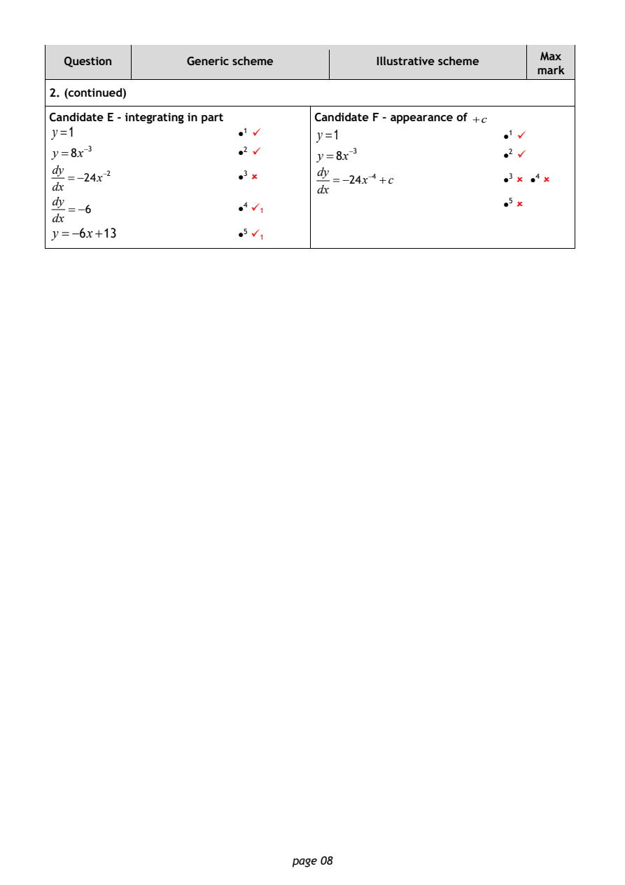
Selectable page text
Max
Question Generic scheme Illustrative scheme
mark
2. (continued)
C ate E - integrating in part Candidate F – appearance of +c
y^{a}=ⁿ1^{d} ⁱ^{d} •1 ✓ y=1 •1 ✓
y=8x⁻³ •2 ✓ y=8x⁻³ •2 ✓
dy dy
=−24x⁻² •3 =−24x⁻⁴ +c •3 •4
dx dx
dy
=−6 •4 ✓
•5
1
dx
y =−6x+13 •5 ✓
1
page 08PDF page 9
Paper 2, Question 3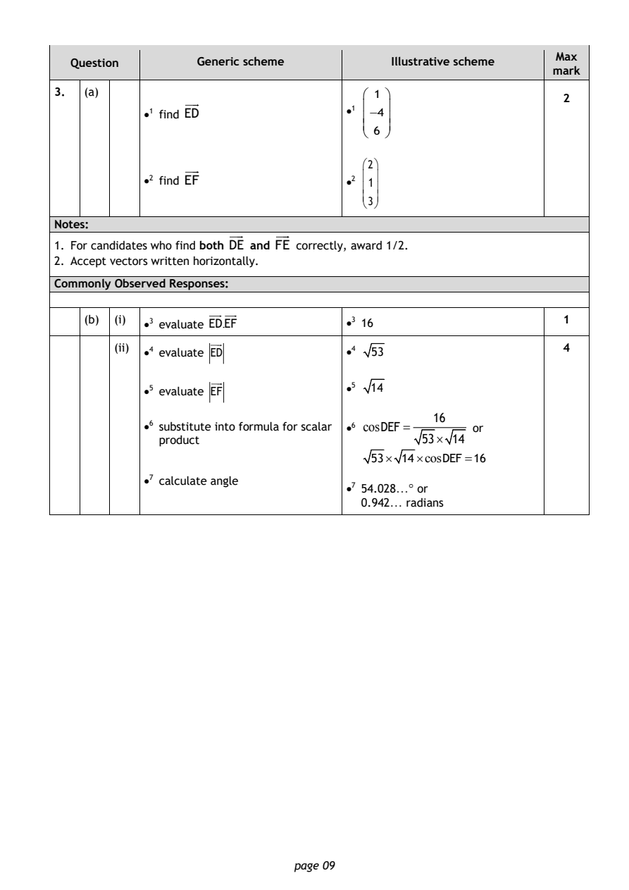
Selectable page text
Max
Question Generic scheme Illustrative scheme
mark
3. (a) 1
2
•1 find ED •1 −4
6
2
•2 find EF •2 1
3
Notes:
1. For candidates who find both DE and FE correctly, award 1/2.
2. Accept vectors written horizontally.
Commonly Observed Responses:
(b) (i) •3 evaluate ED.EF •3 16 1
(ii) •4 evaluate ED •4 53 4
•5 evaluate EF •5 14
16
•6 substitute into formula for scalar •6 cosDEF= or
product 53× 14
53× 14×cosDEF=16
•7 calculate angle
•7 54.028…° or
0.942… radians
page 09PDF page 10
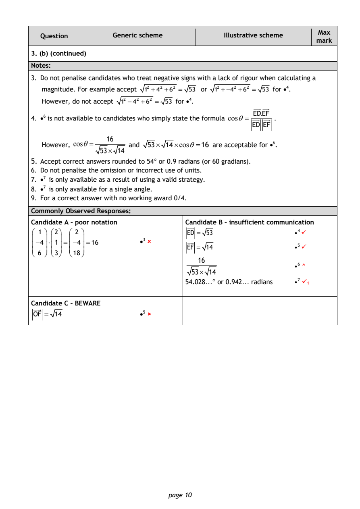
Selectable page text
Max
Question Generic scheme Illustrative scheme
mark
3. (b) (continued)
Notes:
3. Do not penalise candidates who treat negative signs with a lack of rigour when calculating a
magnitude. For example accept 1² +4² +6² = 53 or 1² +−4² +6² = 53 for •⁴.
However, do not accept 1² −4² +6² = 53 for •⁴.
ED.EF
4. •⁶ is not available to candidates who simply state the formula cosθ= .
ED EF
16
However, cosθ= and 53× 14×cosθ=16 are acceptable for •⁶.
53× 14
5. Accept correct answers rounded to 54° or 0.9 radians (or 60 gradians).
6. Do not penalise the omission or incorrect use of units.
7. •⁷ is only available as a result of using a valid strategy.
8. •⁷ is only available for a single angle.
9. For a correct answer with no working award 0/4.
Commonly Observed Responses:
Candidate A – poor notation Candidate B – insufficient communication
1 2 2 ED = 53 •4 ✓
−4 ⋅ 1 = −4 =16 •3
EF = 14 •5 ✓
6 3 18
16
•6 ^
53× 14
54.028…° or 0.942… radians •7 ✓
1
Candidate C – BEWARE
OF = 14 •5
page 10PDF page 11
Paper 2, Question 4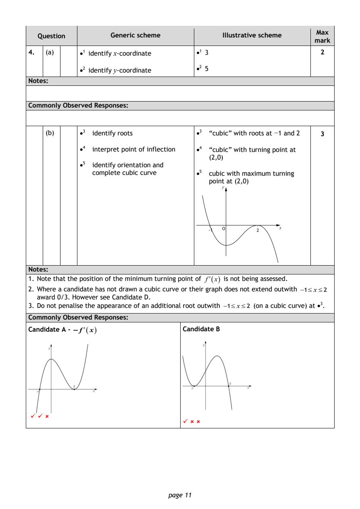
Selectable page text
Max
Question Generic scheme Illustrative scheme
mark
4. (a) •1 identify x-coordinate •1 3 2
•2 identify y-coordinate •2 5
Notes:
Commonly Observed Responses:
(b) •3 identify roots •3 “cubic” with roots at −1 and 2 3
•4 interpret point of inflection •4 “cubic” with turning point at
(2,0)
•5 identify orientation and
complete cubic curve •5 cubic with maximum turning
point at (2,0)
Notes:
1. Note that the position of the minimum turning point of f′(x) is not being assessed.
2. Where a candidate has not drawn a cubic curve or their graph does not extend outwith −1≤x≤2
award 0/3. However see Candidate D.
3. Do not penalise the appearance of an additional root outwith −1≤x≤2 (on a cubic curve) at •³.
Commonly Observed Responses:
Candidate A - − f′(x) Candidate B
✓ ✓
✓
page 11PDF page 12
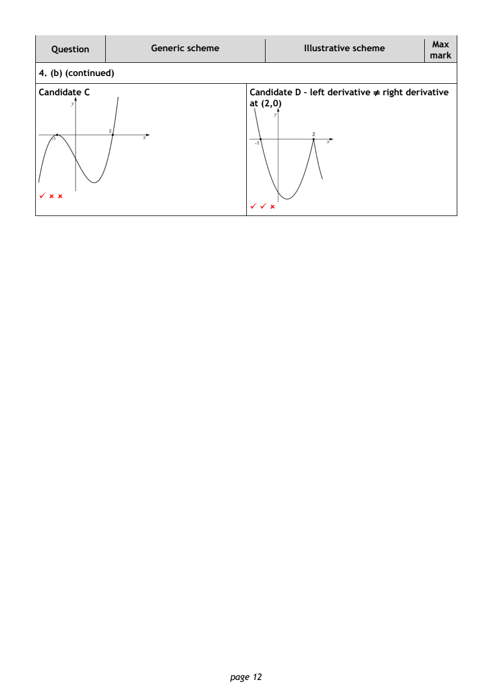
Selectable page text
Max
Question Generic scheme Illustrative scheme
mark
4. (b) (continued)
Candidate C Candidate D – left derivative ≠ right derivative
at (2,0)
✓
✓ ✓
page 12PDF page 13
Paper 2, Question 5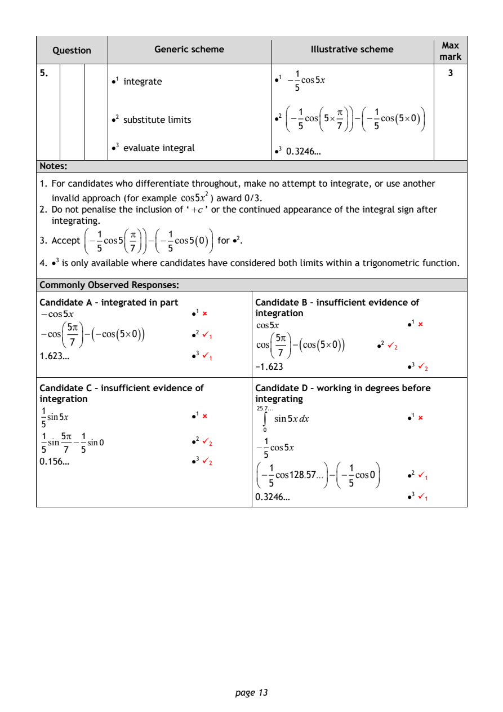
Selectable page text
Max
Question Generic scheme Illustrative scheme
mark
5. 1 3
•1 integrate •1 − cos5x
5
1 π 1
•2 substitute limits •2 − cos 5× − − cos(5×0)
5 7 5
•3 evaluate integral •3 0.3246…
Notes:
1. For candidates who differentiate throughout, make no attempt to integrate, or use another
invalid approach (for example cos5x²) award 0/3.
2. Do not penalise the inclusion of ‘+c’ or the continued appearance of the integral sign after
integrating.
1 π 1
3. Accept − cos5 − − cos5(0) for •².
5 7 5
4. •³ is only available where candidates have considered both limits within a trigonometric function.
Commonly Observed Responses:
Candidate A – integrated in part Candidate B – insufficient evidence of
−cos5x •1 integration
5π cos5x •1
−cos −
( −cos(5×0))
•2 ✓ 1 5π
7 cos − ( cos(5×0)) •2 ✓ 2
1.623… •3 ✓ 7
1
−1.623 •3 ✓
2
Candidate C – insufficient evidence of Candidate D – working in degrees before
integration integrating
1 25.7
sin5x •1 ∫ sin5xdx •1
5
0
1 5π 1
sin − sin0 •2 ✓
2 −
1
cos5x
5 7 5
5
0.156… •3 ✓
2
1 1
− cos128.57... − − cos0 •2 ✓ 1
5 5
0.3246… •3 ✓
1
page 13PDF page 14
Paper 2, Question 6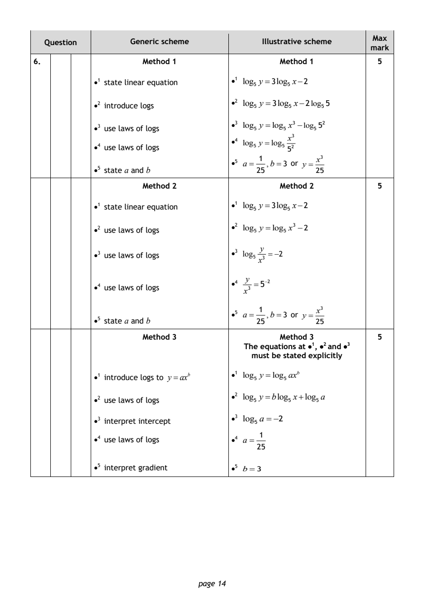
Selectable page text
Max
Question Generic scheme Illustrative scheme
mark
6. Method 1 Method 1 5
•1 state linear equation •1 log₅ y=3log₅ x−2
•2 introduce logs •2 log₅ y=3log₅ x−2log₅5
•3 use laws of logs
•3 log₅ y=log₅ x³ −log₅5²
x³
•4 log₅ y=log₅
•4 use laws of logs
5²
•5 a=
1
,b=3 or y =
x³
•5 state a and b 25 25
Method 2 Method 2 5
•1 state linear equation •1 log₅ y=3log₅ x−2
•2 use laws of logs •2 log₅ y =log₅ x³ −2
y
•3 use laws of logs •3 log₅ =−2
x³
y
•4 =5⁻²
•4 use laws of logs
x³
1 x³
•5 a= ,b=3 or y =
•5 state a and b 25 25
Method 3 Method 3 5
The equations at •¹, •2 and •³
must be stated explicitly
•1 introduce logs to y=ax^{b} •1 log₅ y =log₅ax^{b}
•2 use laws of logs
•2 log₅ y=blog₅ x+log₅a
•3 interpret intercept •3 log₅a=−2
1
•4 use laws of logs •4 a =
25
•5 interpret gradient •5 b=3
page 14PDF page 15
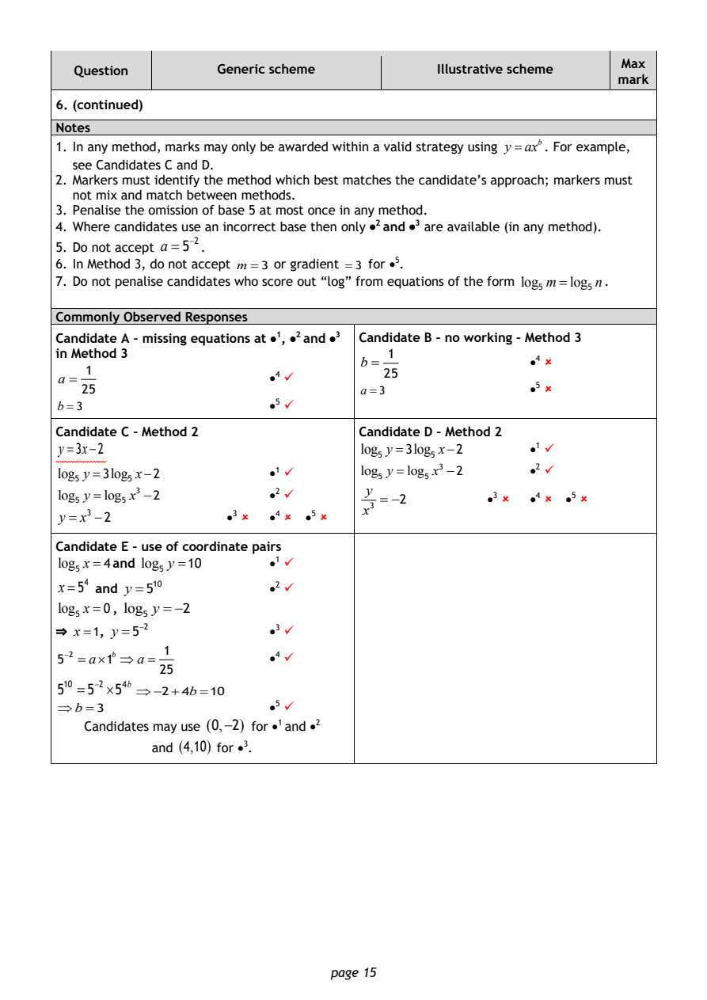
Selectable page text
Max
Question Generic scheme Illustrative scheme
mark
6. (continued)
Notes
1. In any method, marks may only be awarded within a valid strategy using y=ax^{b}. For example,
see Candidates C and D.
2. Markers must identify the method which best matches the candidate’s approach; markers must
not mix and match between methods.
3. Penalise the omission of base 5 at most once in any method.
4. Where candidates use an incorrect base then only •² and •³ are available (in any method).
5. Do not accept a =5⁻².
6. In Method 3, do not accept m=3 or gradient =3 for •⁵.
7. Do not penalise candidates who score out “log” from equations of the form log₅m=log₅n.
Commonly Observed Responses
Candidate A – missing equations at •¹, •2 and •³ Candidate B – no working – Method 3
in Method 3 1
b= •4
a = 1 •4 ✓ 25
25 a=3 •5
b=3 •5 ✓
Candidate C – Method 2 Candidate D – Method 2
y=3x−2 log₅ y=3log₅x−2 •1 ✓
log₅ y=3log₅x−2 •1 ✓ log₅ y=log₅ x³−2 •2 ✓
log₅ y=log₅ x³−2 •2 ✓ y =−2 •3 •4 •5
x³
y=x³−2 •3 •4 •5
Candidate E – use of coordinate pairs
log₅ x=4and log₅ y=10 •1 ✓
x=5⁴ and y =5¹⁰ •2 ✓
log₅ x=0, log₅ y =−2
⇒ x=1, y=5⁻² •3 ✓
1
5⁻² =a×1^{b} ⇒a= •4 ✓
25
5¹⁰ =5⁻²×5⁴^{b} ⇒−2+4b=10
⇒b=3 •5 ✓
Candidates may use (0,−2) for •¹ and •²
and (4,10) for •³.
page 15PDF page 16
Paper 2, Question 7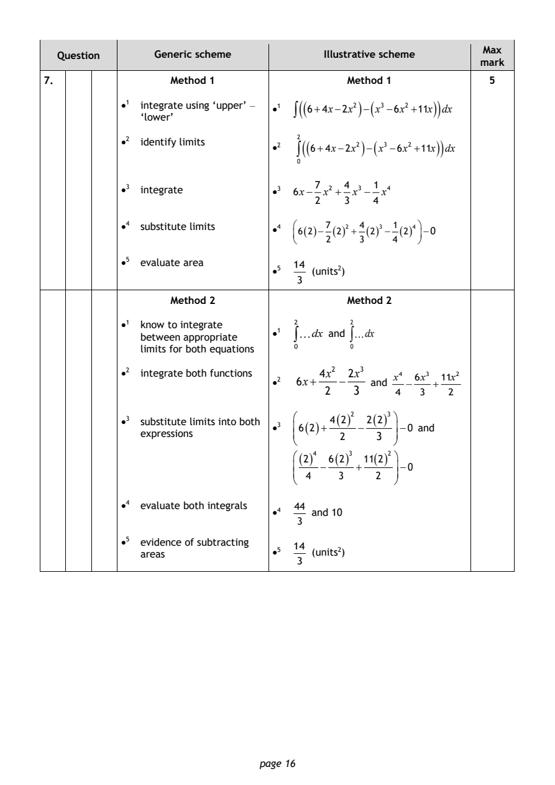
Selectable page text
Max
Question Generic scheme Illustrative scheme
mark
7. Method 1 Method 1 5
•1 integrate using ‘upper’ – •1 ∫ (( 6+4x−2x² ) − ( x³−6x²+11x )) dx
‘lower’
•2 identify limits •2 ∫ 2 (( 6+4x−2x² ) − ( x³−6x² +11x )) dx
0
7 4 1
•3 integrate •3 6x− x² + x³ − x⁴
2 3 4
•4 substitute limits •4 6(2)− 7 (2)²+ 4 (2)³− 1 (2)⁴ −0
2 3 4
•5 evaluate area 14
•5 (units²)
3
Method 2 Method 2
•1 know to integrate 2
•1 ∫ dx and ∫² dx
between appropriate
limits for both equations 0 0
•2 integrate both functions 4x² 2x³
•2 6x+ − and
x⁴
−
6x³
+
11x²
2 3 4 3 2
•3 substitute limits into both
4(2)² 2(2)³
•3 6(2)+ − −0 and
expressions 2 3
(2)⁴ 6(2)³ 11(2)²
− + −0
4 3 2
•4 evaluate both integrals 44
•4 and 10
3
•5 evidence of subtracting
14
areas •5 (units²)
3
page 16PDF page 17
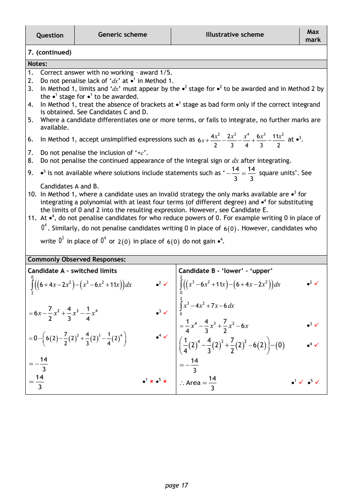
Selectable page text
Max
Question Generic scheme Illustrative scheme
mark
7. (continued)
Notes:
1. Correct answer with no working – award 1/5.
2. Do not penalise lack of ‘dx’ at •¹ in Method 1.
3. In Method 1, limits and ‘dx’ must appear by the •² stage for •² to be awarded and in Method 2 by
the •¹ stage for •¹ to be awarded.
4. In Method 1, treat the absence of brackets at •¹ stage as bad form only if the correct integrand
is obtained. See Candidates C and D.
5. Where a candidate differentiates one or more terms, or fails to integrate, no further marks are
available.
4x² 2x³ x⁴ 6x³ 11x²
6. In Method 1, accept unsimplified expressions such as 6x+ − − + − at •³.
2 3 4 3 2
7. Do not penalise the inclusion of ‘+c’.
8. Do not penalise the continued appearance of the integral sign or dx after integrating.
14 14
9. •5 is not available where solutions include statements such as ‘− = square units’. See
3 3
Candidates A and B.
10. In Method 1, where a candidate uses an invalid strategy the only marks available are •³ for
integrating a polynomial with at least four terms (of different degree) and •⁴ for substituting
the limits of 0 and 2 into the resulting expression. However, see Candidate E.
11. At •⁴, do not penalise candidates for who reduce powers of 0. For example writing 0 in place of
0⁴. Similarly, do not penalise candidates writing 0 in place of 6(0). However, candidates who
write 0³ in place of 0⁴ or 2(0) in place of 6(0) do not gain •⁴.
Commonly Observed Responses:
Candidate A – switched limits Candidate B - ‘lower’ – ‘upper’
0 2
∫ (( 6+4x−2x² ) − ( x³−6x² +11x )) dx •2 ✓ ∫ (( x³−6x² +11x ) − ( 6+4x−2x² )) dx •2 ✓
2 0
2
∫x³−4x² +7x−6dx
7 4 1
=6x− x² + x³ − x⁴ •3 ✓
0
2 3 4
1 4 7
= x⁴ − x³ + x² −6x •3 ✓
4 3 2
=0− 6(2)− 7 (2)²+ 4 (2)³− 1 (2)⁴ •4 ✓ 1 4 7
2 3 4 (2)⁴ − (2)³ + (2)² −6(2) −(0) •4 ✓
4 3 2
14 14
=− =−
3 3
14 14
= •1 •5 ∴Area = •1 ✓ •5 ✓
3 3
page 17PDF page 18
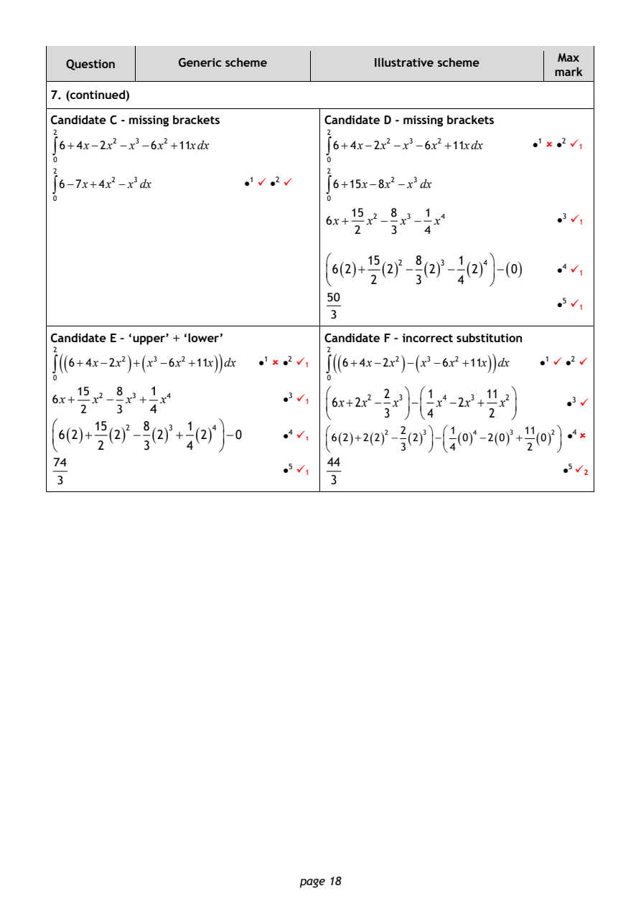
Selectable page text
Max
Question Generic scheme Illustrative scheme
mark
7. (continued)
Candidate C - missing brackets Candidate D - missing brackets
2 2
∫6+4x−2x² −x³−6x² +11xdx ∫6+4x−2x² −x³−6x² +11xdx •1 •2 ✓
1
0 0
2 2
∫6−7x+4x² −x³dx •1 ✓ •2 ✓ ∫6+15x−8x² −x³dx
0 0
15 8 1
6x+ x² − x³ − x⁴ •3 ✓
1
2 3 4
15 8 1
6(2)+ (2)² − (2)³ − (2)⁴ −(0) •4 ✓
1
2 3 4
50
•5 ✓
1
3
Candidate E – ‘upper’ + ‘lower’ Candidate F – incorrect substitution
2 2
∫ (( 6+4x−2x² ) + ( x³−6x² +11x )) dx •1 •2 ✓ ∫ (( 6+4x−2x² ) − ( x³−6x² +11x )) dx •1 ✓ •2 ✓
1
0 0
15 8 1 2 1 11
6x+ x² − x³ + x⁴ •3 ✓ 1 6x+2x² − x³ − x⁴ −2x³+ x² •3 ✓
2 3 4 3 4 2
15 8 1
6(2)+ (2)² − (2)³ + (2)⁴ −0 •4 ✓ 1 6(2)+2(2)²− 2 (2)³ − 1 (0)⁴ −2(0)³+ 11 (0)² •4
2 3 4 3 4 2
74 44
•5 ✓ •5 ✓
1 2
3 3
page 18PDF page 19
Paper 2, Question 8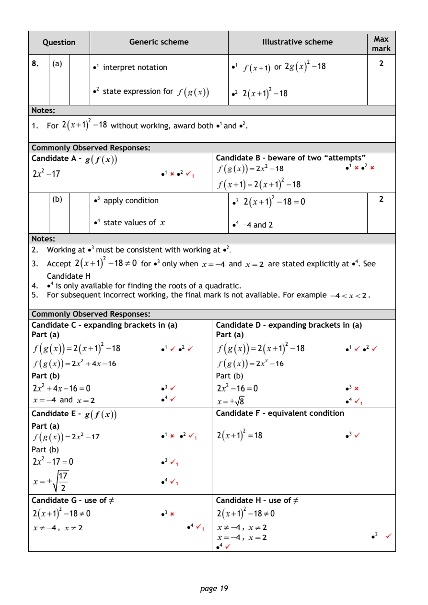
Selectable page text
Max
Question Generic scheme Illustrative scheme
mark
8. (a) •1 interpret notation •1 f (x+1) or 2g(x)² −18 2
•2 state expression for f (g(x)) •2 2(x+1)² −18
Notes:
1. For 2(x+1)² −18 without working, award both •¹ and •².
Commonly Observed Responses:
Candidate A – g( f (x)) Candidate B – beware of two “attempts”
f (g(x))=2x² −18 •1 •2
2x² −17 •1 •2 ✓
1
f (x+1) =2(x+1)² −18
(b) •3 apply condition •3 2(x+1)² −18=0 2
•4 state values of x •4 −4 and 2
Notes:
2. Working at •³ must be consistent with working at •².
3. Accept 2(x+1)² −18≠0 for •³ only when x=−4 and x=2 are stated explicitly at •⁴. See
Candidate H
4. •4 is only available for finding the roots of a quadratic.
5. For subsequent incorrect working, the final mark is not available. For example −4< x<2.
Commonly Observed Responses:
Candidate C – expanding brackets in (a) Candidate D – expanding brackets in (a)
Part (a) Part (a)
f ( g(x)) =2(x+1)² −18 •1 ✓ •2 ✓ f ( g(x)) =2(x+1)² −18 •1 ✓ •2 ✓
f (g(x))=2x² +4x−16 f (g(x))=2x² −16
Part (b) Part (b)
2x² +4x−16=0 •3 ✓ 2x² −16=0 •3
x=−4 and x=2 •4 ✓ x=± 8 •4 ✓
1
Candidate E - g( f (x)) Candidate F – equivalent condition
Part (a)
f (g(x))=2x² −17 •1 •2 ✓ 1 2(x+1)² =18 •3 ✓
Part (b)
2x² −17 =0 •3 ✓
1
17
x =± •4 ✓
1
2
Candidate G – use of ≠ Candidate H – use of ≠
2(x+1)² −18≠0 •3 2(x+1)² −18≠0
x≠−4, x≠2 •4 ✓
1
x≠−4, x≠2
x=−4, x=2 •3 ✓
•4 ✓
page 19PDF page 20
Paper 2, Question 9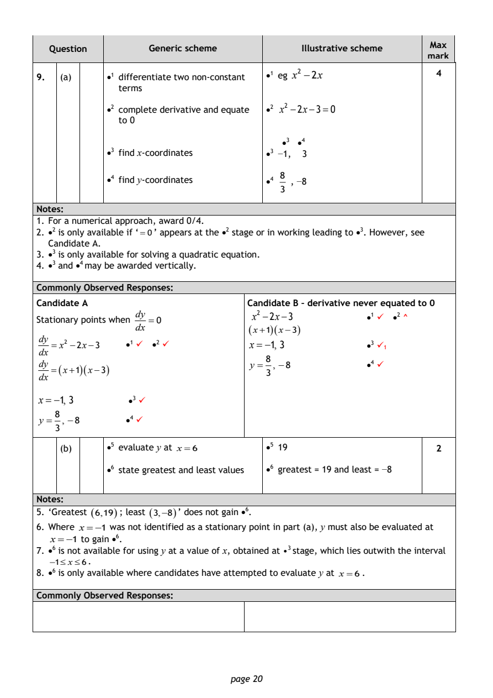
Selectable page text
Max
Question Generic scheme Illustrative scheme
mark
9. (a) •1 differentiate two non-constant •1 eg x² −2x 4
terms
•2 complete derivative and equate •2 x² −2x−3=0
to 0
•3 •4
•3 find x-coordinates •3 −1, 3
8
•4 find y-coordinates •4 , −8
3
Notes:
1. For a numerical approach, award 0/4.
2. •² is only available if ‘=0’ appears at the •² stage or in working leading to •³. However, see
Candidate A.
3. •³ is only available for solving a quadratic equation.
4. •³ and •⁴ may be awarded vertically.
Commonly Observed Responses:
Candidate A Candidate B – derivative never equated to 0
Stationary points when dy =0 x² −2x−3 •1 ✓ •2 ^
dx (x+1)(x−3)
dy
= x² −2x−3 •1 ✓ •2 ✓ x =−1, 3 •3 ✓
1
dx
8
dy y = , −8 •4 ✓
=(x+1)(x−3)
3
dx
x =−1, 3 •3 ✓
8
y = , −8 •4 ✓
3
(b) •5 evaluate y at x=6 •5 19 2
•6 state greatest and least values •6 greatest = 19 and least = −8
Notes:
5. ‘Greatest (6,19); least (3,−8)’ does not gain •⁶.
6. Where x=−1 was not identified as a stationary point in part (a), y must also be evaluated at
x=−1 to gain •⁶.
7. •⁶ is not available for using y at a value of x, obtained at •³ stage, which lies outwith the interval
−1≤x≤6.
8. •⁶ is only available where candidates have attempted to evaluate y at x=6.
Commonly Observed Responses:
page 20PDF page 21
Paper 2, Question 10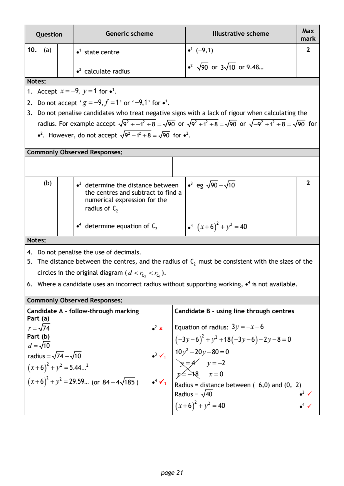
Selectable page text
Max
Question Generic scheme Illustrative scheme
mark
10. (a) •1 state centre •1 (−9,1) 2
•2 90 or 3 10 or 9.48…
•2 calculate radius
Notes:
1. Accept x=−9, y =1 for •¹.
2. Do not accept ‘g =−9, f =1’ or ‘−9,1’ for •¹.
3. Do not penalise candidates who treat negative signs with a lack of rigour when calculating the
radius. For example accept 9² +−1² +8 = 90 or 9² +1² +8 = 90 or −9² +1² +8 = 90 for
•2. However, do not accept 9² −1² +8 = 90 for •².
Commonly Observed Responses:
(b) •3 determine the distance between •3 eg 90− 10 2
the centres and subtract to find a
numerical expression for the
radius of C₂
•4 determine equation of C₂ •4 (x+6)² + y² =40
Notes:
4. Do not penalise the use of decimals.
5. The distance between the centres, and the radius of C₂ must be consistent with the sizes of the
circles in the original diagram (d <r_{C} <r ).
₂ C₁
6. Where a candidate uses an incorrect radius without supporting working, •⁴ is not available.
Commonly Observed Responses:
Candidate A – follow-through marking Candidate B – using line through centres
Part (a)
r = 74 •2 Equation of radius: 3y =−x−6
Part (b) (−3y−6)² + y² +18(−3y−6)−2y−8=0
d = 10
10y² −20y−80=0
radius= 74− 10 •3 ✓
1
y =4 y =−2
(x+6)² + y² =5.44...²
x =−18 x =0
(x+6)² + y² =29.59... (or 84−4 185) •4 ✓
1 Radius = distance between (−6,0) and (0,−2)
Radius = 40 •3 ✓
(x+6)² + y² =40 •4 ✓
page 21PDF page 22
Paper 2, Question 11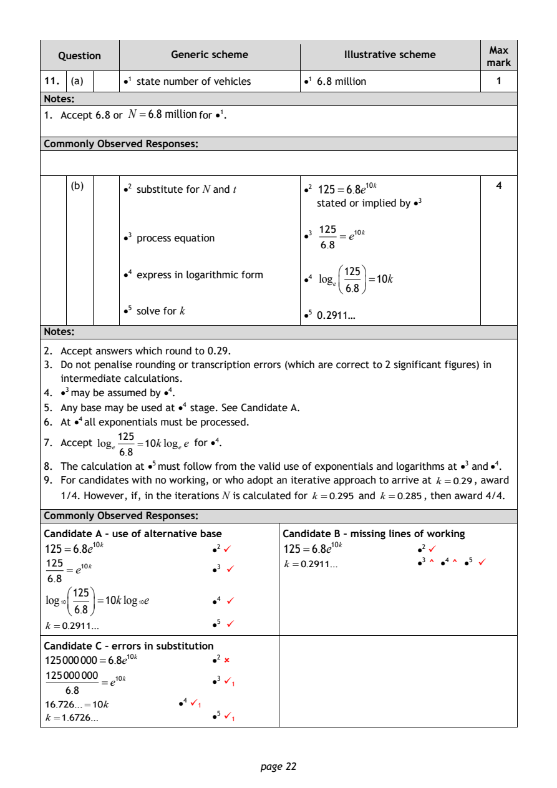
Selectable page text
Max
Question Generic scheme Illustrative scheme
mark
11. (a) •1 state number of vehicles •1 6.8 million 1
Notes:
1. Accept 6.8 or N =6.8 millionfor •¹.
Commonly Observed Responses:
(b) •2 substitute for N and t •2 125=6.8e¹⁰^{k} 4
stated or implied by •³
125
•3 process equation •3 =e¹⁰^{k}
6.8
•4 express in logarithmic form 125
•4 logₑ =10k
6.8
•5 solve for k
•5 0.2911…
Notes:
2. Accept answers which round to 0.29.
3. Do not penalise rounding or transcription errors (which are correct to 2 significant figures) in
intermediate calculations.
4. •³ may be assumed by •⁴.
5. Any base may be used at •⁴ stage. See Candidate A.
6. At •⁴ all exponentials must be processed.
125
7. Accept logₑ =10klogₑe for •⁴.
6.8
8. The calculation at •⁵ must follow from the valid use of exponentials and logarithms at •³ and •⁴.
9. For candidates with no working, or who adopt an iterative approach to arrive at k =0.29, award
1/4. However, if, in the iterations N is calculated for k =0.295 and k =0.285, then award 4/4.
Commonly Observed Responses:
Candidate A – use of alternative base Candidate B – missing lines of working
125=6.8e¹⁰^{k} •2 ✓ 125=6.8e¹⁰^{k} •2 ✓
125 k =0.2911... •3 ^ •4 ^ •5 ✓
=e¹⁰^{k} •3 ✓
6.8
125
log¹⁰ =10klog¹⁰e •4 ✓
6.8
k =0.2911... •5 ✓
Candidate C – errors in substitution
125000000=6.8e¹⁰^{k} •2
125000000
=e¹⁰^{k} •3 ✓
1
6.8
16.726...=10k •4 ✓
1
k =1.6726... •5 ✓
1
page 22PDF page 23
Paper 2, Question 12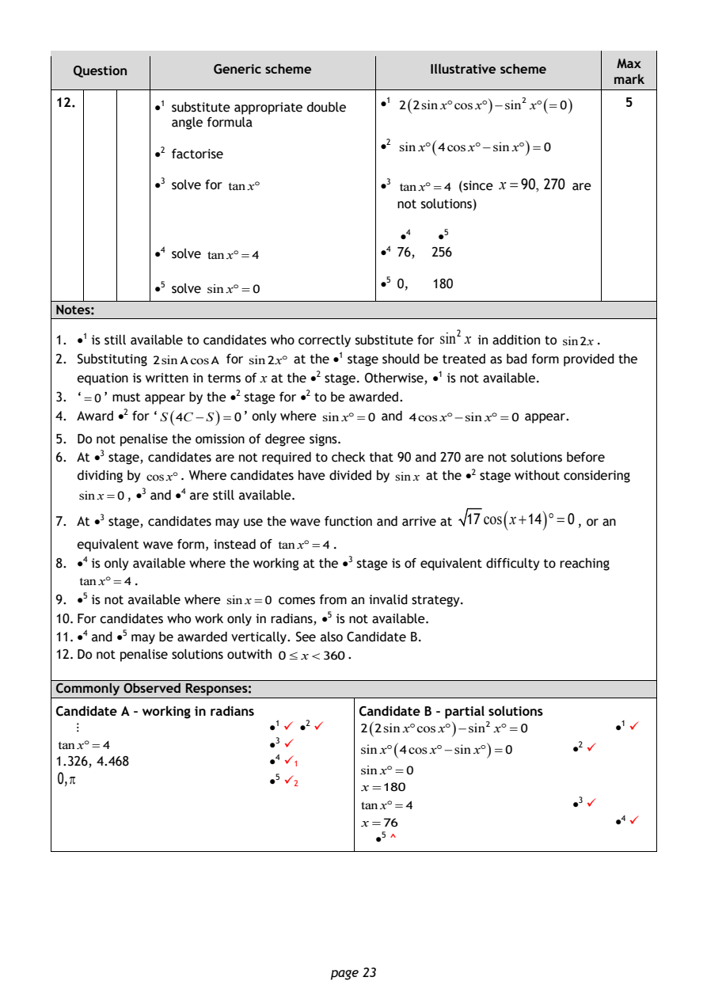
Selectable page text
Max
Question Generic scheme Illustrative scheme
mark
12. •1 substitute appropriate double •1 2(2sinx°cosx°)−sin² x°(=0) 5
angle formula
•2 sinx°(4cosx°−sinx°)=0
•2 factorise
•3 solve for tanx° •3 tanx°=4 (since x=90, 270 are
not solutions)
•4 •5
•4 solve tanx°=4 •4 76, 256
•5 solve sinx°=0 •5 0, 180
Notes:
1. •¹ is still available to candidates who correctly substitute for sin² x in addition to sin2x.
2. Substituting 2sinAcosA for sin2x° at the •¹ stage should be treated as bad form provided the
equation is written in terms of x at the •² stage. Otherwise, •¹ is not available.
3. ‘=0’ must appear by the •² stage for •² to be awarded.
4. Award •² for ‘S(4C−S)=0’ only where sinx°=0 and 4cosx°−sinx°=0 appear.
5. Do not penalise the omission of degree signs.
6. At •³ stage, candidates are not required to check that 90 and 270 are not solutions before
dividing by cosx°. Where candidates have divided by sinx at the •² stage without considering
sinx=0, •³ and •⁴ are still available.
7. At •³ stage, candidates may use the wave function and arrive at
17cos(x+14 )°=0,
or an
equivalent wave form, instead of tanx°=4.
8. •⁴ is only available where the working at the •³ stage is of equivalent difficulty to reaching
tanx°=4.
9. •⁵ is not available where sinx=0 comes from an invalid strategy.
10. For candidates who work only in radians, •⁵ is not available.
11. •⁴ and •⁵ may be awarded vertically. See also Candidate B.
12. Do not penalise solutions outwith 0≤ x<360.
Commonly Observed Responses:
Candidate A – working in radians Candidate B – partial solutions
⋮ •1 ✓ •2 ✓ 2(2sinx°cosx°)−sin² x°=0 •1 ✓
tanx°=4 •3 ✓ sinx°(4cosx°−sinx°)=0 •2 ✓
1.326, 4.468 •4 ✓
1
sinx°=0
0,π •5 ✓
2 x=180
tanx°=4 •3 ✓
x=76 •4 ✓
•5 ^
page 23PDF page 24
Paper 2, Question 13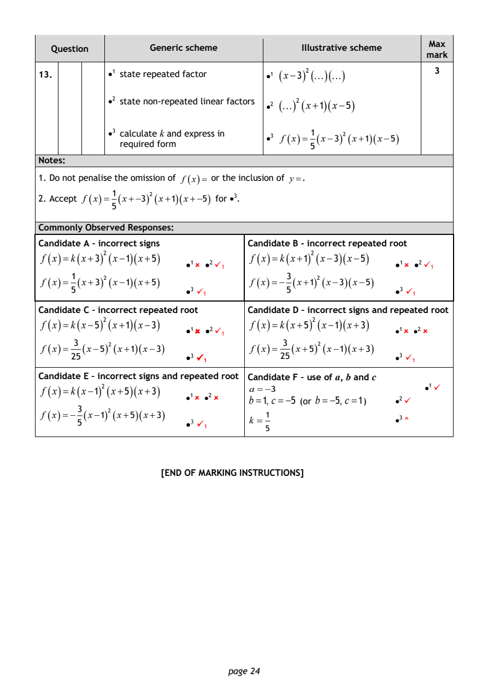
Selectable page text
Max
Question Generic scheme Illustrative scheme
mark
13. •1 state repeated factor •1 (x−3)²( )( ) 3
•2 state non-repeated linear factors
•2
( )2(x+1)(x−5)
•3 calculate k and express in 1
•3 f (x)= (x−3)²(x+1)(x−5)
required form 5
Notes:
1. Do not penalise the omission of f (x)= or the inclusion of y=.
1
2. Accept f (x)= (x+−3)²(x+1)(x+−5) for •³.
5
Commonly Observed Responses:
Candidate A – incorrect signs Candidate B - incorrect repeated root
f (x)=k(x+3)²(x−1)(x+5) f (x)=k(x+1)²(x−3)(x−5)
•1 •2 ✓
1
•1 •2 ✓
1
1 3
f (x)= (x+3)²(x−1)(x+5) f (x)=− (x+1)²(x−3)(x−5)
5 •3 ✓
1
5 •3 ✓
1
Candidate C – incorrect repeated root Candidate D – incorrect signs and repeated root
f (x)=k(x−5)²(x+1)(x−3) f (x)=k(x+5)²(x−1)(x+3)
•1 •2 ✓
1
•1 •2
3 3
f (x)= (x−5)²(x+1)(x−3) f (x)= (x+5)²(x−1)(x+3)
25 •3 ✓
1
25 •3 ✓
1
Candidate E – incorrect signs and repeated root Candidate F – use of a, b and c
f (x)=k(x−1)²(x+5)(x+3) a=− •1 ✓
•1 •2 b=1,³c=−5 (or b=−5, c=1) •2 ✓
3
f (x)=− (x−1)²(x+5)(x+3) 1
5 •3 ✓
k = •3 ^
1 5
[END OF MARKING INSTRUCTIONS]
s
page 24